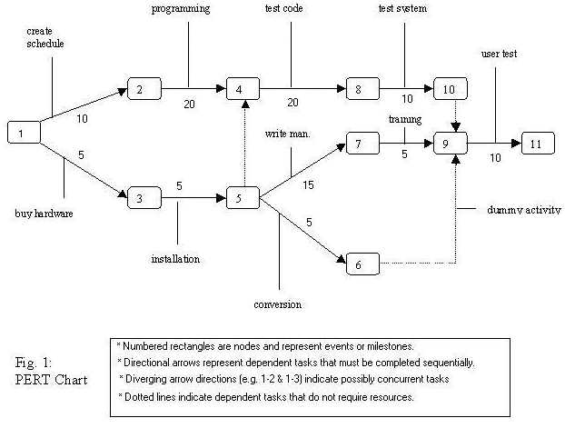

Project Management TermsThese are not mandated knowledge for ITA or SD in the 2011-2014 study design. |
|
| Lead time* | Occurs when a task should theoretically wait for its predecessor to finish, but can actually start a little early. The time that the tasks overlap is lead time. For example, when replacing computers in a computer lab, you could actually start bringing in the new computers while the old ones were being packed up and moved out. The time during which packing and unpacking can happen at the same time is lead time. *Not to be confused with the economic "Lead time" which refers to the time between conceiving an idea and bringing it to fruition Lead time, according to IT@Work, are waiting times (like lag times) that do not involve dependencies. MS Project's help says: "Lead time is overlap between tasks that have a dependency. For example, if a task can start when its predecessor is half finished, you can specify a finish-to-start dependency with a lead time of 50 percent for the successor task." |
| Lag time | Lag is the the minimum amount of time that must pass between the finish of one activity and the start of its successor(s). For example, if task A is painting a wall, and dependent task B is putting up a picture on the wall, there would need to be some lag time between the end of task A and the start of task B to let the paint dry. Lag time is shown in a PERT chart as an arrow with a duration but no task assigned to it. MS Project's help says: "Lag time is a delay between tasks that have a dependency. For example, if you need a two-day delay between the finish of one task and the start of another, you can establish a finish-to-start dependency and specify two days of lag time." |
| Float time | a synonym for slack time |
| Slack time | the amount of time a task can be extended or delayed before it impacts on the starting time of other tasks. Tasks A and B start at the same time. Task C is dependent on both tasks A and B. Task A takes 2 days and task B takes 5 days. Task A has 3 days' slack. It can run 3 days overtime before it affects the planned starting time for task C. |
| Free slack | how much a task can slip before it delays another task. |
| Total slack | how much a task can slip before it delays the finishing date of the project. |
| Milestone | An event of zero duration that marks a significant point of progress in a project. Milestones are used to see whether a project is on time or not. A milestone may be "Design is finished", "Sign contract", "Project Ends" etc. |
| Event | Something that happens, but that is not a task (it takes time, but does not take labour or resources). e.g. "Concrete dries" |
| Task | Something that needs to be done that requires some time. |
| Dependent task | A task that cannot begin before a previous task finishes. e.g. Task B, 'putting on shoes' is dependent on task A, 'putting on socks'. |
| Critical path | The series of tasks from the beginning of a project up to its end that takes the longest time. This is also the shortest time in which all tasks in the project can be completed. By definition, no task on the critical path can have any slack time. In other words, no task on the critical path can be delayed or extended without affecting the finishing date of the project. |
| Critical task | A task on the critical path. |
| Work Breakdown Structure (WBS) | Table showing tasks, durations, resources (people responsible) and dependencies. See the example. To make a WBS accurate, you have to know the constraints of the environment. E.g. Constraint - the family's house has two showers. |
| Dummy Task | Shown by a dotted arrow on a PERT chart, it shows a dependency but no task. I know that means nothing, so see the Buffalo PERT example. Here's another take on dummy tasks that may make sense to you.  Dummy tasks are tasks that must be completed in sequence but that don't require resources or completion time. These are represented by dotted lines with arrows. For example, the dashed arrow linking nodes 6 and 9 indicates that task 9 can't start until "conversion" (as well as "training" and "test system" are all finished, but nothing needs to be done by anyone between the end of conversion and the start of the next task.
|
Back to the last page you visited
Created July 21, 2005
Last changed: November 16, 2011 1:21 PM
VCE IT Lecture notes © Mark Kelly 2001-